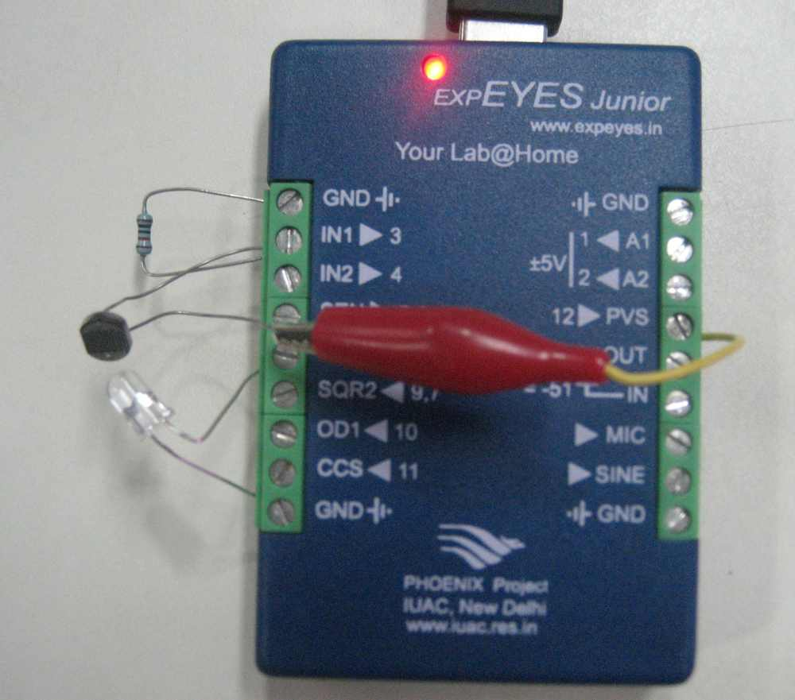

Resistance of the LDR is measured by comparing it with a 10k resistor. PVS is set to 4 volts and the LDR and 10k resistor are connected from PVS to GND in series. The voltage across 10k is measured to find out the current. The voltage drop across the LDR is obtained by subtracting IN1 from PVS. Using these and the value of current, the resistance of LDR is calculated.
